Dado um conjunto de 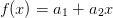 pontos, desejamos encontrar a reta que melhor se ajusta a esses pontos de tal forma a minimizar o resíduo.
Ou seja, encontre a curva 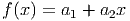 tal que
O objetivo é encontrar 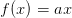 e geralmente temos muito mais equações do que incógnitas, i.e.,
 .
.
O mínimo de 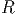 ocorre quando quando a derivada primeira é igual a zero:
Na forma matricial obtemos
|
| (7.1) |
Observe que é equivalente ao problema matricial
|
| (7.2) |
Teorema 7.1.1. A matriz 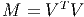 é quadrada de ordem 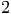 e é
inversível sempre que o posto da matriz 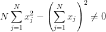 é igual a número de colunas  .
.
Demonstração. Para provar que 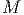 é invertível precisamos mostrar que 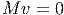 implica 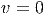:
Demonstração. Isso é facilmente provado pelo seguinte argumento:
Solução. Defina
Devemos encontrar o parâmetro que minimiza o erro, portanto, calculamos:
Solução.
Devemos encontrar os parâmetros 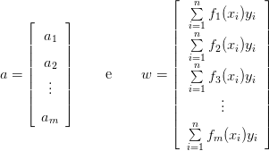 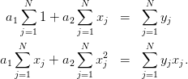 que minimizam o erro, por isso, calculamos as derivadas parciais:
O erro mínimo acontece quando as derivadas são nulas, ou seja: